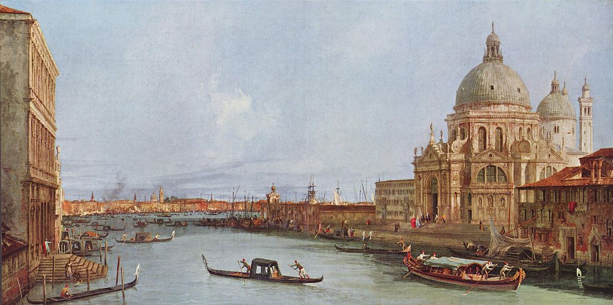

<head>
<meta charset="UTF-8" />
<meta name="keywords" content="drawing, painting" />
<meta name="description" content="drawings by Sunjy" />
<title>Sunjy</title>
<link rel="shortcut icon" type="image/x-icon" href="../../mImages/mCommon/favicon.ico" media="screen" />
<link rel="stylesheet" type="text/css" href="../../mCsses/mCommon/mCssA.css" />
<link rel="stylesheet" type="text/css" href="../../mCsses/mCommon/mCssB.css" />
<link rel="stylesheet" type="text/css" href="../../mCsses/mCommon/mCssC.css" />
<link rel="stylesheet" type="text/css" href="../../mCsses/mCommon/mCssD.css" />
<link rel="stylesheet" type="text/css" href="../../mCsses/mContent/mCssA.css" />
<link rel="stylesheet" type="text/css" href="../../mCsses/mContent/mCssB.css" />
<link rel="stylesheet" type="text/css" href="../../mCsses/mContent/mCssC.css" />
<link rel="stylesheet" type="text/css" href="../../mCsses/mContent/mCssD.css" />
</head>
<script type="text/javascript" src="../../mScripts/mContent/mContentAA.js" /></script>
<script type="text/javascript" src="../../mScripts/mContent/mContentAB.js" /></script>
<script type="text/javascript" src="../../mScripts/mContent/mContentAC.js" /></script>
<script type="text/javascript" src="../../mScripts/mContent/mContentAD.js" /></script>
<script type="text/javascript"></script> 
<script type="text/javascript">
document.write('<div class="mImgAbsolute"></div>');
/*
document.write('<p class="mFontSizeBColor" />From a white paper...</p>');
document.write('<table class="center"><tr><td>');
document.write('');
document.write('</td></tr></table>');
*/
</script>


<script type="text/javascript">
document.write('<p class="mFontSizeBColor" />Santa Maria della Salute in Venedig vom Canal Grande</p>');
document.write('<p class="mFontSizeSColor" />“Santa Maria della Salute in Venedig vom Canal Grande” by Canaletto depicts the Santa Maria della Salute (Saint Mary of Health), a large Roman Catholic church in Venice, which is also one of the most recent of the so-called plague churches.<br><br>It stands on the slender finger between the Grand Canal and the Giudecca Canal, making the church visible when entering the Piazza San Marco from the water.<br><br>One hundred years before this painting was made in 1630, Venice experienced a devastating outbreak of the plague. As a votive offering for deliverance from the pestilence, the Republic of Venice vowed to build a church dedicated to Our Lady of Health.<br><br>The church was designed in the baroque style, and most of the objects of art housed in the church bear references to the Black Death.<br><br>The dome of the church became an essential addition to the Venice skyline and indicative of the city, which then inspiring artists like Canaletto and this painting.<br><br>This Canaletto painting is a typical example of the vedute paintings popular with Grand Tour travelers of the 1700s as a visual record of their travels.<br><br>Canaletto was one of the more famous painters of city views or vedute, especially of Venice.<br><br>Many of Canaletto’s paintings can be found in museums across the world, depict highly detailed, usually large-scale paintings of Venetian other famous cityscapes.<br></p>');
document.write('<table class="center" /><tr><td>');
document.write('<br>It stands on the slender finger between the Grand Canal and the Giudecca Canal, making the church visible when entering the Piazza San Marco from the water.<br><br>One hundred years before this painting was made in 1630, Venice experienced a devastating outbreak of the plague. As a votive offering for deliverance from the pestilence, the Republic of Venice vowed to build a church dedicated to Our Lady of Health.<br><br>The church was designed in the baroque style, and most of the objects of art housed in the church bear references to the Black Death.<br><br>The dome of the church became an essential addition to the Venice skyline and indicative of the city, which then inspiring artists like Canaletto and this painting.<br><br>This Canaletto painting is a typical example of the vedute paintings popular with Grand Tour travelers of the 1700s as a visual record of their travels.<br><br>Canaletto was one of the more famous painters of city views or vedute, especially of Venice.<br><br>Many of Canaletto’s paintings can be found in museums across the world, depict highly detailed, usually large-scale paintings of Venetian other famous cityscapes.<br>" />');
document.write('</td></tr></table>');
</script>


